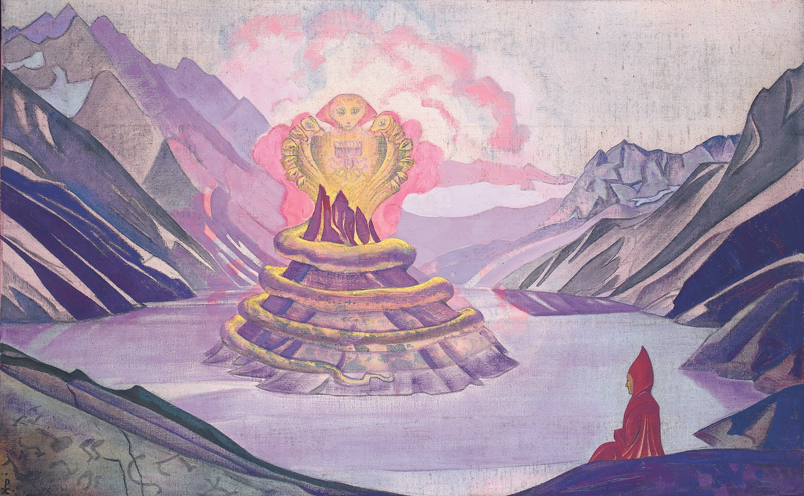

Take a chariot apart and lay the pieces in a row. Two wheels, an axle, a frame, a yoke, a long pole, a handful of pegs. Now point to the chariot. It is not the axle. It is not the wheels, or the pole, or the heap of all of them together. Put it back, and it carries you to town. Somewhere between the parts you can name and the cart that plainly works, the chariot itself has gone missing.
That missing chariot is the subject of the hardest book in Buddhist philosophy. Its author, an Indian monk named Nagarjuna, would say the chariot is empty. Not unreal, not a trick of the eye, but empty of being a chariot on its own, a thing that holds itself up and owes nothing to anything else. And his claim, the one it takes him a whole book to argue, is that everything is like the chariot. Every object, every person, every atom, you, and emptiness itself. Nothing in the universe stands alone.
Nagarjuna lived in southern India around 150 to 250 CE. For much of the Buddhist world he is the most important thinker after the Buddha himself, sometimes called the second Buddha. He founded the school called Madhyamaka, the Middle Way, and his one undisputed book is the Mulamadhyamakakarika, the "root verses of the middle way." People call it the MMK, because almost nobody can say the rest. It is about 450 short, dense verses, and it is not a story or a scripture to chant. It is a philosophical argument, closer to Euclid than to a hymn. It is tight and technical, and it mostly says no.

You need two words before you start, and the book lives or dies on getting them right. The first is the disease. The second is the cure.
If you have ever heard the line "form is emptiness, emptiness is form," chanted in temples or printed on a tote bag, this is where it gets its teeth. That line is from a short scripture, the Heart Sutra, and the Heart Sutra only asserts it. Nagarjuna is the one who sat down and argued it, move by move, until it held. The MMK is the engine under the poetry.
The featured translation throughout is Jay Garfield's (The Fundamental Wisdom of the Middle Way, Oxford, 1995), the edition that became standard because he pairs every verse with a plain-language commentary that tells you what the argument is actually doing. Each stop below gives you his words first, then unpacks them. On a few famous verses, where the translators split hard, you can open a panel and see the spread.
Stop 1 / The dedicatory verses
The book opens by saying no, eight times
Garfield / the dedication, before Chapter 1
I prostrate to the Perfect Buddha,The best of teachers, who taught thatWhatever is dependently arisen isUnceasing, unborn,
Unannihilated, not permanent,Not coming, not going,Without distinction, without identity,And free from conceptual construction.
Most books open by telling you what they are about. This one opens with a wall of denials. Before the first argument, Nagarjuna lists eight things the world does not do: it does not arise, does not cease, does not last, does not vanish, does not come, does not go, is not a single thing, is not many things. Eight noes, in four pairs.
They are all aimed at one target, svabhava. If a thing had a fixed, independent core, then it would have to really arise, pop into being as that core, and really cease, and really stay the same or really get destroyed. Nagarjuna's wager is that none of those solid events survives a close look. Take any of them and try to find the self-standing thing it is supposed to happen to, and your hand closes on nothing.
But watch what he salutes in the same breath. The Buddha, he says, taught all of this as dependent arising. That is the quiet yes hiding behind the eight noes. The world is not a collection of self-standing things that pop in and out of being. It is a web of things that lean on each other, each one showing up only because others did. Empty of standing alone, and full of leaning. The eight noes clear the ground. Dependent arising is what is left standing on it.
The last phrase, "free from conceptual construction," names the villain of the entire book: prapanca, the mind's habit of spinning bare experience into a sprawl of fixed, named, separate things. We will come back to it. For now, notice the move. A book that opens by denying eight things is telling you its method up front. It will not hand you a doctrine to hold. It will take things away until only the dependent world is left.
The eight negations, three ways
अनिरोधम् अनुत्पादम् अनुच्छेदम् अशाश्वतम् । अनेकार्थम् अनानार्थम् अनागमम् अनिर्गमम् ॥
anirodham anutpadam anucchedam asasvatam / anekartham ananartham anagamam anirgamam
Eight negative prefixes in a row, like a drumbeat: an-, an-, an-, a-. The Sanskrit hammers the "no" into the sound of the line itself. Watch how a careful scholar and a secular translator handle the same eight denials.
Batchelor, a secular Buddhist, dissolves the jargon completely. "Dependent arising" becomes contingency, which is exactly what it means: things being contingent on one another. The pacification of prapanca becomes to ease fixations. Same eight noes, two thousand years apart, and the distance between "free from conceptual construction" and "to ease fixations" is the distance you cross on every line of this book.
Stop 2 / Examination of motion
Can you find the going in a walk?
Garfield / Chapter 2, verse 1
What has been moved is not moving.What has not been moved is not moving.Apart from what has been moved and what has not been moved,Movement cannot be conceived.
Here is the method in miniature, run on something that seems too obvious to argue about. Motion. Watch someone walk across a room. Clearly they are moving. Nagarjuna asks a strange question: where, exactly, is the going? Point to it.
Try the floor already crossed. That part is done, no going is happening there. Try the floor not yet reached. Nothing is happening there either, it has not been walked. So the going must be in the stretch being crossed right now. But look closely at "right now" and it is just more floor, instantly sorting itself into already-crossed and not-yet. The going keeps sliding into the gone or the not-yet-gone. You never catch it sitting still as a thing of its own.
This looks like a cheap trick, and it is worth saying so out loud, because the same objection will come up for 27 chapters. Of course people walk. Nagarjuna is not denying that. (Garfield, flatly: "Nobody thinks Nagarjuna is denying that anything ever moves.") What he denies is that motion is a thing with svabhava, a self-standing something that exists on its own, apart from a mover, a path, and a clock. Pull those away and hunt for pure motion underneath, and there is nothing there to find. Motion is real the way the chariot is real. It works. It just does not exist on its own.
And notice the shape of the argument, because he keeps it for the whole book. He never says "here is what motion really is." He takes your assumption, that motion is a findable thing, splits it into every possible case, and shows each case fall apart. Then he walks on. He builds nothing. He only dismantles. He says as much elsewhere: if I had a position of my own, I would be open to the same attack, but I have none, so I am not.
Stop 3 / Examination of the four noble truths
The four lines the whole tradition leans on
Garfield / Chapter 24, verses 18 and 19
Whatever is dependently co-arisenThat is explained to be emptiness.That, being a dependent designation,Is itself the middle way.
Something that is not dependently arisen,Such a thing does not exist.Therefore a nonempty thingDoes not exist.
If you keep one verse from the book, keep this one. It is the hinge the rest of the tradition hangs on, and it does three things in four lines.
First, it welds together the two ideas we have been circling. Dependent arising (things leaning on each other) and emptiness (things lacking svabhava) are not two separate facts. They are one fact, said twice. A thing is empty because it is dependent: if it needs parts and causes and conditions in order to be what it is, then it has no independent core, and "no independent core" is just what empty means. Dependent equals empty. That is the equation the book was built to reach.
It helps to have a picture. A forest is empty, in exactly this sense. There is no extra thing, Forest, hovering over and above the trees, the soil, the light, the line somebody drew on a map. "Forest" is a handy word for all of that, leaning together. So the forest is empty of being one self-standing thing, and at the same time it is completely full of trees. Empty and full are not opposites here. The emptiness is the fullness, once you look honestly at what is holding it up, which is everything except itself.
Second, the next verse snaps the loop shut into a clean argument. Everything that exists arises dependently. Whatever arises dependently is empty. Therefore everything that exists is empty. There is no leftover object hiding somewhere with a solid private core. Not one.
Third, that phrase "a dependent designation" does something quiet and crucial. Even emptiness, Nagarjuna says, is only a designation, a useful label that depends on the things it describes. It is not a deeper substance the world is secretly made of. Hold onto that, because mistaking emptiness for a thing is the one error he will call incurable. And all of it together, not solidly existing and not nonexistent either, is what he means by the middle way.
One verse, six translators
यः प्रतीत्यसमुत्पादः शून्यतां तां प्रचक्ष्महे । सा प्रज्ञप्तिर् उपादाय प्रतिपत् सैव मध्यमा ॥
yah pratityasamutpadah sunyatam tam pracaksmahe / sa prajnaptir upadaya pratipat saiva madhyama
The whole verse turns on three words in the third line, prajnaptir upadaya, which Garfield gives as "a dependent designation." It is the answer to the question, what kind of thing is emptiness? Six translators, six tries at the same careful idea.
A designation overlaid, a provisional name, a guiding notion, a convention, a dependent concept. Every one is straining to say the same fragile thing: emptiness is a way of speaking, not a kind of stuff. The translators sweat this line because getting it wrong turns Nagarjuna into the nihilist he spent the whole book refuting.
Stop 4 / Examination of the four noble truths
Two kinds of true
Garfield / Chapter 24, verses 8 to 10
The Buddha's teaching of the DharmaIs based on two truths:A truth of worldly conventionAnd an ultimate truth. [...]
Without a foundation in the conventional truth,The significance of the ultimate cannot be taught.Without understanding the significance of the ultimate,Liberation is not achieved.
A fair objection has been building this whole time. If nothing really exists on its own, if even emptiness is just a label, then isn't everything false? Why get out of bed? Nagarjuna's answer is that there are two kinds of true, and you need both.
Conventional truth is the everyday kind. The chariot carries you. The forest has trees. Water is wet, fire burns, you owe your friend twenty dollars. All of this is true, at the level where we live and talk and act, and Nagarjuna never denies a word of it. Ultimate truth is the other kind: that none of those things has svabhava, that all of it is empty, dependent, leaning. The chariot is real (conventionally) and has no independent existence (ultimately). Both at once. The skill is not to pick one. It is to stop confusing them, to stop reading the solid-looking everyday world as if it were the self-standing kind.
Then comes the part that surprises people. You might assume the ultimate truth is the good one and the conventional is the junk you throw out once you have "seen through" it. Nagarjuna says the reverse. You cannot reach the ultimate except through the conventional. Emptiness can only be pointed at with ordinary words, taught with ordinary examples, in an ordinary room. There is no secret wordless channel that skips the chariots. The ladder is built of convention, and you do not get to kick it away, because the moment you do there is nowhere left to stand.
His word for conventional truth, samvrti, also means "concealing." The everyday world is the only thing that can show you the truth, and it is also the screen that hides it. Same surface. It depends on how you look.
Stop 5 / Examination of the conditioned
Do not make emptiness a thing
Garfield / Chapter 13, verse 8
The victorious ones have saidThat emptiness is the relinquishing of all views.For whomever emptiness is a view,That one will accomplish nothing.
Here is the trap, and Nagarjuna walks you straight up to it. You have followed the argument. Everything is empty. So you reach, almost reflexively, for the next thought: emptiness is the truth, the real nature of things, the one solid fact under the shifting world. And in that instant you have wrecked it.
Because that move turns emptiness into a svabhava, a fixed independent essence, the very thing the whole book denies. If emptiness were the secret material reality is made of, then reality would have a self-standing core after all, and Nagarjuna would have spent 450 verses swapping one fixed thing for another. He saw it coming. Emptiness, he says, is itself empty. It is a tool, "a dependent designation," a finger pointing at the moon, not the moon.
His image for getting it wrong is blunt. Emptiness misunderstood, he warns in a later chapter, is like a snake picked up by the wrong end. Handled right, it frees you. Grabbed as a new absolute to believe in, it turns and bites. The people who make emptiness into a view, a doctrine, a possession to defend, he calls incurable, not because they are dim but because they have taken the one medicine that dissolves clinging and found a way to cling to it.
So emptiness is not a belief the book is selling you. It is the act of putting beliefs down, including the belief in emptiness. The cure works, and then the cure dissolves itself.
Three words the translators fight over
Almost all the trouble in reading Nagarjuna comes down to three Sanskrit words. Here is the spread of English each one has been given, and what it actually points at.
The disease. Garfield says essence (and, in his notes, "inherent existence"); Streng says self-existence; Inada says self-nature; Siderits and Katsura say intrinsic nature. What every one of them is denying: an independent, built-in being that a thing has on its own and owes to nothing else.
The cure. Nearly everyone now says emptiness. Older translators reached for the Void or voidness, which made it sound like a cosmic nothing you fall into, and pointed a generation of readers straight at the nihilism Nagarjuna was arguing against. "Emptiness" is better because it lets you ask the next question: empty of what? (Of svabhava.) The same word, sunya, is the Sanskrit for zero.
The engine. The widest spread of all: Garfield uses conceptual construction, fabrication, and objectification in different places; Streng says phenomenal extension; Batchelor says fixations. It is the mind's habit of spreading a sprawl of fixed, named, separate things over a world that is actually undivided and dependent. It is the factory that manufactures svabhava in the first place.
Stop 6 / Examination of the self
Why an argument about essences ends suffering
Garfield / Chapter 18, verse 5
Action and misery having ceased, there is nirvana.Action and misery come from conceptual thought.This comes from mental fabrication.Fabrication ceases through emptiness.
It would be fair to ask, around now, what any of this has to do with suffering. Nagarjuna is a Buddhist, and the point of Buddhism is the end of suffering, not winning metaphysics debates. This verse is where the whole austere argument turns out to have been about your life the entire time. Read it from the bottom up, because that is how it is built.
Start at the last line. Fabrication, prapanca, that engine from the last stop, ceases through emptiness. When you actually see that things are empty, the mind's machine for cranking out fixed, separate, self-standing objects winds down. Next line up: that fabrication is what produces conceptual thought, the constant carving of the world into me and not-me, mine and not-mine, want and don't-want. Next: that carving is what drives action and misery, the grasping and the shoving-away that runs an ordinary human life. And when the grasping stops, that, he says, is nirvana.
Here is the chain in plain order. We take a flowing, dependent world and paint solid little essences onto it. We do it hardest to ourselves: we treat "me" as a fixed thing that has to be guarded, fed, and made permanent. Out of that single error grows all the clutching and the dread. See through the error, see that there was never a fixed self or a fixed world to grip in the first place, and the clutching has nothing left to hold. Not because you have gritted your teeth and quit wanting, but because you have noticed the things you were gripping were like the chariot all along.
That is why a dry book about whether motion exists is, underneath, a book about how to stop suffering. The fixed self was the heaviest thing you were carrying. It was empty the whole time.
Stop 7 / Examination of nirvana
Nowhere else to go
Garfield / Chapter 25, verses 19 and 20
There is not the slightest differenceBetween cyclic existence and nirvana.There is not the slightest differenceBetween nirvana and cyclic existence.
Whatever is the limit of nirvana,That is the limit of cyclic existence.There is not even the slightest difference between them,Or even the subtlest thing.
This is the line that makes people stop reading and look up. Samsara is the ordinary world of suffering and rebirth, the wheel everyone is trying to get off. Nirvana is the goal, the release, the way out. And Nagarjuna says there is not the slightest difference between them. The exit and the trap are the same place.
He does not mean that suffering is secretly wonderful, or that there is nothing to wake up from. He means there is no second world. Nirvana is not a heaven you travel to once you have finally understood emptiness. It is this exact world, the chariots and the forests and the friend you owe twenty dollars, seen without the delusion of svabhava. Samsara is the empty world grasped as if it were solid. Nirvana is the same empty world, no longer grasped. Same trees. Different eyes.
Now the careful part, the part a hostile reader will pounce on, so let us be exact. He is not saying the two are one identical thing. He is saying there is no inherent difference between them, because both are empty, and you cannot have an absolute gap between two things when neither of them has a solid core to anchor the gap. The wall between ordinary life and liberation, the wall you have spent your life trying to climb, was painted on. There was never anywhere to go. There was only a way to see.
It is fitting that this is the one famous verse in the book where almost every translator lands on the same words. After 27 chapters of splitting hairs, total agreement: not the slightest difference.
Stop 8 / The last move
No teaching was ever taught
Garfield / Chapter 25, verse 24
The pacification of all objectificationAnd the pacification of illusion:No Dharma was taught by the BuddhaAt any time, in any place, to any person.
The book ends by erasing itself. After all those arguments, Nagarjuna writes that the Buddha never taught anything, anywhere, to anyone. It sounds like a paradox, or a flourish to go out on. It is the last and most consistent move in the entire project.
Remember what every stop has been doing. Take some solid-looking thing, motion, the self, causation, even emptiness, and show that it does not stand on its own. The teaching itself is the last thing left on the table. If you walk away from this book holding "emptiness" as a doctrine the Buddha handed down, a thing you now own, you have quietly rebuilt exactly the kind of fixed object the book spent itself dissolving. So Nagarjuna kicks the last leg out. There was no fixed teaching, no teacher looming over you, no doctrine to clutch. Only a finger, pointing, and now even the finger is lowered.
"The pacification of all objectification": the quieting of the mind's compulsion to turn everything, including its own best insight, into a thing. That quiet is the real destination. Not a new belief. The end of needing one.
It is a strange feeling, reaching the end of the hardest book in Buddhist philosophy and finding that it has, very deliberately, left your hands empty. That was the gift. You came in gripping a world full of solid things, yourself first among them. You leave having watched each one turn out to be like the chariot: real, working, and empty of standing alone.
Where the text comes from
The featured translation throughout is Jay L. Garfield's The Fundamental Wisdom of the Middle Way: Nagarjuna's Mulamadhyamakakarika (Oxford University Press, 1995), which became the standard English edition because it sets a plain-language commentary beside every verse. Each quotation is verbatim; the side panels stack his rendering against the other major translators on the lines where they most famously diverge, and every translator is named.
- The featured walk is Jay Garfield (1995), translated from the Tibetan with reference to the Sanskrit.
- The comparison panels stack Richard Robinson (1967), Kenneth Inada (1970), Mervyn Sprung (1979), David Kalupahana (1986), and Mark Siderits and Shoryu Katsura (2013), with the secular rendering by Stephen Batchelor (2000). Frederick Streng (1967), the translator who helped make "emptiness" the standard English for sunyata over the older "the Void," is quoted for his word choices.
- The Sanskrit is the de Jong critical edition, via the GRETIL digital text. The MMK survives complete in Sanskrit only because the later commentator Candrakirti quoted every verse of it inside his own Prasannapada.
- On the philosophy, the background draws on the Stanford Encyclopedia of Philosophy entry on Madhyamaka and the Internet Encyclopedia of Philosophy entry on Nagarjuna.
Two honest notes. The chariot in the opening is not Nagarjuna's own. It belongs to the monk Nagasena, answering King Milinda in the Milindapanha, and was elaborated centuries later by Candrakirti; Nagarjuna's own version of the same argument uses fire and its fuel (Chapter 10). And the Svatantrika and Prasangika labels are a later, mostly Tibetan classification from the sixth and seventh centuries, read back onto a text that predates them by some four hundred years. The MMK itself takes no side; it just proceeds by demolition.
The breakdowns are mine. Most of the modern translations are still in copyright; they appear here in short excerpts, for comparison and study, with every translator named.
The painting in the opening and on the homepage card is Nicholas Roerich's Nagarjuna, Conqueror of the Serpent (1925), from his Banners of the East series, in the public domain. The "Perfection of Wisdom" scriptures the nagas were said to guard are the same Prajnaparamita texts whose slogan, "form is emptiness," Nagarjuna spent the MMK arguing.